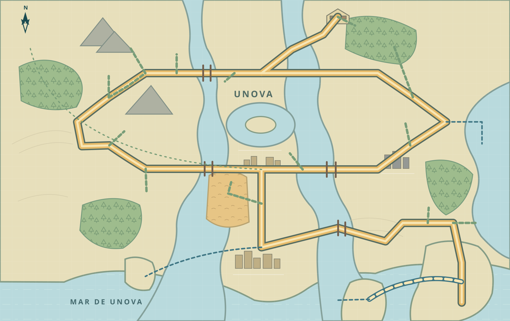

Mapa de Unova
Sua jornada, lugar por lugar. Toque no mapa para ver o que fazer, quais Pokémon procurar e quais itens pegar. Se quiser seguir a história, abra o roteiro abaixo.
Minha jornada 0/156 UnovaMeu progresso ↘
Atualize suas insígnias e os recursos que já tem. O filtro “Disponíveis para mim” usa essas informações para mostrar encontros compatíveis com seu avanço. Algumas áreas também dependem de acontecimentos da história. As marcações ficam salvas automaticamente neste aparelho.
Carregando sua jornada…
Roteiro da jornadaDa primeira rota ao pós-jogo · abra a etapa em que você está
Cidades, rotas e áreas

VISÃO GERAL · toque para navegarTodas as áreas
Dicas para explorar
Use Surf para atravessar a água, Strength para mover pedras e Waterfall para subir cachoeiras. Algumas rotas do leste só ficam acessíveis depois da Liga.
Nem todo Pokémon aparece na grama comum. Procure também grama que se mexe, nuvens de poeira, sombras nas pontes e círculos na água. A estação do jogo pode mudar os encontros.
Você recebe apenas um dos três iniciais. Para encontrar Landorus, precisa ter Tornadus e Thundurus na equipe; Thundurus vem de White por troca. Victini e outros Pokémon míticos dependem de eventos antigos.
Lista dos Pokémon
Marque os Pokémon que você já obteve. A Pokédex de Unova segue a numeração original do jogo; a lista completa inclui também Pokémon de outras regiões encontrados neste guia.
Encontros de Pokémon Black consultados no Pokéarth. Cada porcentagem indica a chance de aparecer aquela espécie quando acontece um encontro pelo método indicado. Pokémon recebidos de personagens e de eventos aparecem separados dos encontros selvagens. A Pokédex de Unova vai de #000 a #155; as espécies de outras regiões usam a numeração Nacional. Mapa vetorial inspirado no traçado de PatoAnidae02 (CC BY-SA 4.0).